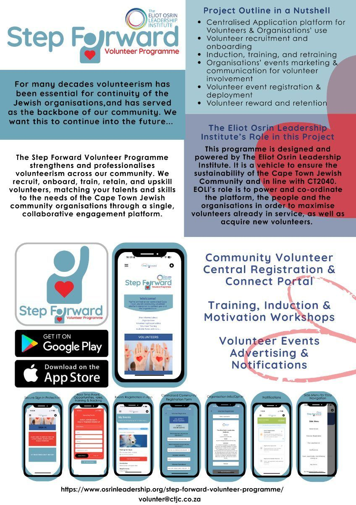

Step Forward Volunteer Programme Cape Town is dedicated to fostering a vibrant community by connecting enthusiastic volunteers with meaningful opportunities. We serve the Jewish community in Cape Town, ensuring that volunteers are equipped to make a positive difference.
Our journey began after analyzing past projects and consulting with numerous organizations, revealing a need for a centralized platform for volunteer sign-ups. This led to the creation of an innovative onboarding portal and mobile app, streamlining the volunteer process.
We value safety, transparency, and community support. By vetting volunteers and offering professional training, we ensure that our volunteers are well-prepared and organizations receive the help they need with trust and confidence.
Discover the services that make volunteering in Cape Town accessible and impactful.

Seamlessly onboard with our user-friendly app, designed to gather essential information and ensure a smooth start to your volunteer journey.
Our platform facilitates direct interaction between volunteers and organizations, enhancing collaboration and information sharing.
Professionalize your volunteering experience with our comprehensive training programs, tailored to equip you with necessary skills.

We'd love to hear from you — reach out to us anytime.